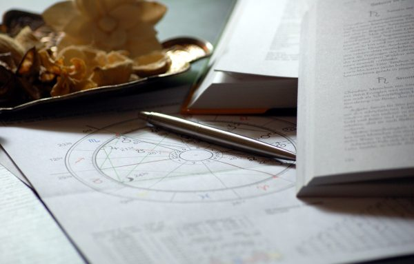

This article (A Brief History of Astrology) was written for the wonderful Ephemeris.Co – we work together to bring the magic of Astrology to your world :
For most people on the planet, Astrology is a "woo-woo" subject reserved for the back-pages of a magazine or used as a fun party trick. However, what many aren't aware of, is that Astrology has one of the oldest, most illustrious histories of all. It goes as far back as 5, 000 years BC (that's over 7, 000 years ago!), and it's likely that it was around even before that.
To be clear, Astrology is the symbolic language of the cosmos using the planetary movements against the backdrop of the Stars and the Seasons. It's not astronomy, which is the scientific study of these bodies – however these two do go together, hand in hand. Let's explore a brief timeline of how this ancient and wonderfully accurate art came into being and evolved into what it is today:
Early Astrology / Astronomy – 5, 000 BC – 500 BC
- Rock paintings of planetary movements – including the Moon and Sun, and their effects on the earth – have been discovered in early Sumerian culture as far back as 5, 000 BC.
- The Ancient Babylonians (in Persia) – also called "Chaldeans", constructed "Star Towers" to observe the stars and planets, and discovered that whilst some stars stayed "fixed", others seemed to move – they named these "Wandering Stars", which were, of course, planets.
- They noted the positions of planets at particular times, in repetition, seemed to have a consistent correlation with events on earth. For example, an alignment of Jupiter and Venus in a certain constellation seemed to always herald a King being born (Bible class, anyone?)
- Meanwhile, in ancient Egypt, they had their own brand of astrology, worshipping the star Goddess Nuit.
Hellenistic (Traditional) Astrology – 500BC – 400AD
- Hellenistic Astrology was born due to the conquering of Egypt by Persia, and then Persia by Alexander the Great from Greece. Previously, each region had their own versions of Astrology, but because of these wars, they merged and something new and amazing started to emerge – this was called Hellenistic, or Traditional Astrology – a version of Astrology that is still taught today in certain Astrology Schools.
- Greek Philosophers such as Plato and Hippocrates combined their philosophical ideas with astrological practices, and soon it was widely known that Greek Physician wouldn't diagnose patient without through knowledge of their Natal (Birth) Charts.
The Dark Ages – 400AD – 750 ADS
- With the burning of the Great Library of Alexandria, much knowledge was lost, and so began the decline of Hellenistic Astrology, and the onset of the "Dark Ages". However, this was a much-needed time of gestation, as many Arabian Mathematical methods were introduced to Astrology, most of which are still used to this day.
The Renaissance 1100 AD – 1700 AD
- After a while, Astrology once again started to emerge back into the modern world, this time in Europe. This is considered a time when Astrology was at a peak of its power, and many notable and great astrologers were born and revered at this time – most of them whose methods are still followed. Bonatti, Zoller, Galileo, Kepler and Lilly were just a few of the illustrious astrologers around at the time and whose books are studied today in Traditional Astrology Schools.
- Astrologers were consulted in every important matter, whether it was choosing a time to go to war, whether to align with a country or advice on the future of a King. Many Kings and Queens had their own, personal astrologers.
- Astrology was taught in universities and reflected in the art of the time, as well as in the literature and architecture.
- Astrology began to decline in 1770 due to the Church becoming suspicious of the power that Astrologers had, and soon this art was vilified and made out to be "the devils' work". The Birth of Reason and Science also contributed to the decline of Astrology, as well as the Industrial Age.
The Birth of Psychological/Pop Astrology 1800 AD – 1960 AD
- After a long time underground, being relegated to parlour tricks and games, Astrology once more began to make its way back into the world. It began in a newspaper column as a write-up for the birth of a royal, and from there began to grow again.
- Alan Leo is one of the main astrologers in 1860 who began "person centred" astrology – focussing on the sign that the sun was in at the time of birth as a symbol of the personality. Astrology became less of a political, global focussed art, and more of a psychological one.
- Carl Jung was amongst those who took to astrology, and respected it very much, lending Astrology gravitas and respect in the newly-birthed psychological world.
- Linda Goodman, a famous 1960's astrologer and writer, took astrology to the masses with her popular Sun Sign and Love sign books, and it became all the rage to ask "what's your sign, baby?" in the swinging 60's. She is one of the single most powerful influences on astrology today!
Modern Astrology Today – 1960 AD – PRESENT
- Astrology has entered the mainstream with a vengeance and is becoming ever more popular, with well-known modern astrologers such as Chain Nicholas taking the world by storm! Millennials have particularly responded well to the power of Astrology to give meaning to a chaotic, confusing modern world.
- Astrology schools have popped up online as well as in brick and mortar form, and it's easy to get your own birth chart simply by downloading it via an app or any astrology website.
- There is a well-known and highly respected group of Traditional astrologers who are striving to translate and decipher old texts from the Hellenistic era and bring it to the modern world, thus bringing more maturity to the more "woo woo" idea that most people have of Astrology.
Summary – Where is Astrology going?
Astrology has always made a comeback, no matter how deeply people have tried to bury this ancient language of the universe. It looks to be growing and growing, with more and more people taking it seriously as a workable counselling and guidance system. It relies on both science and intuition, which makes it far more believable and accurate than many new-age practices. It looks like Astrology is here to stay!